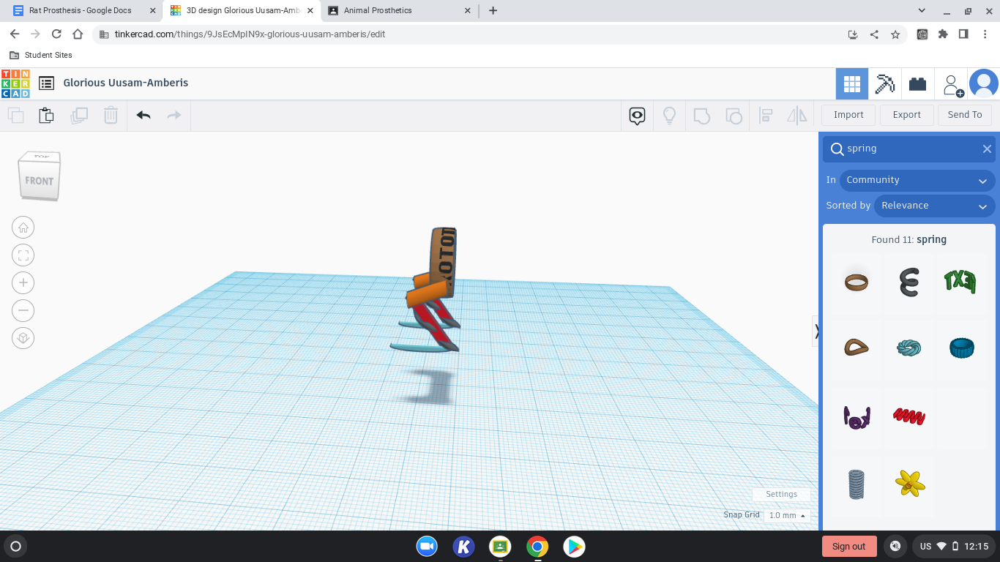
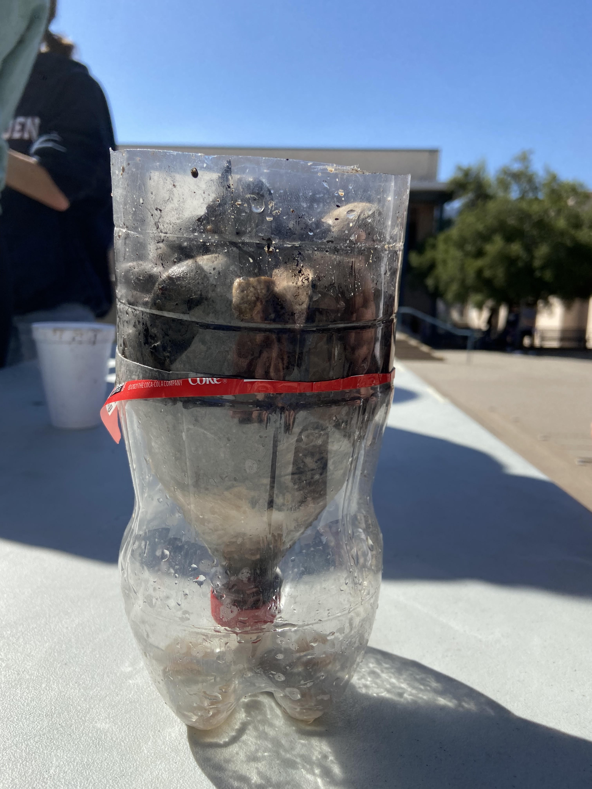
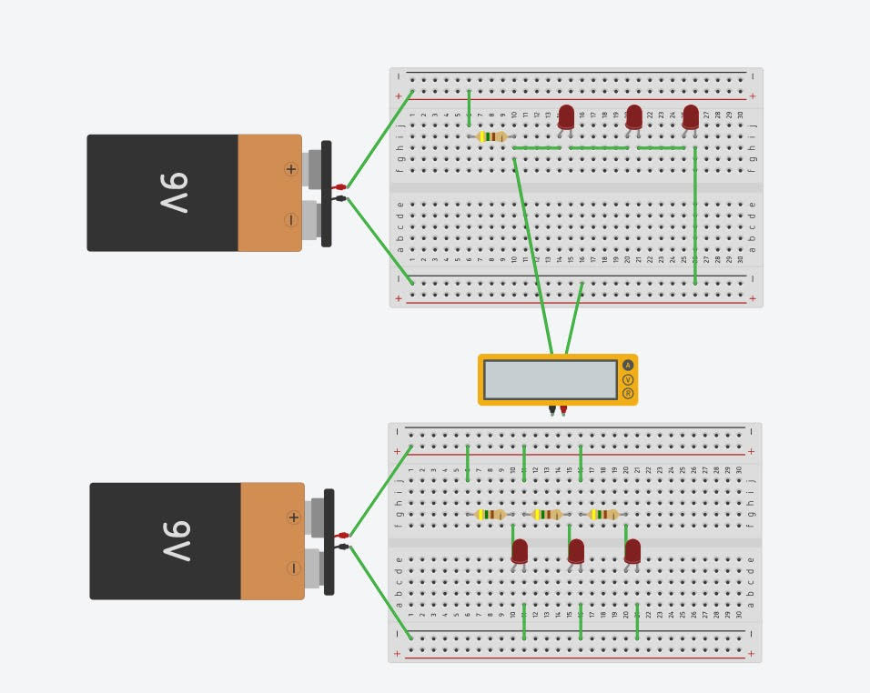
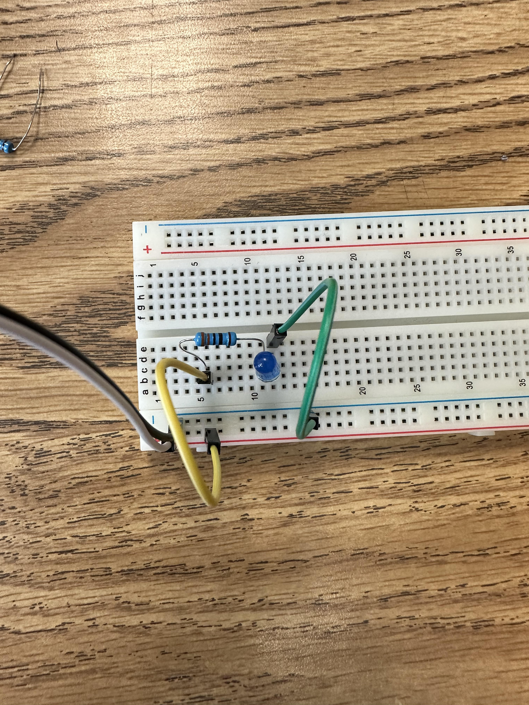
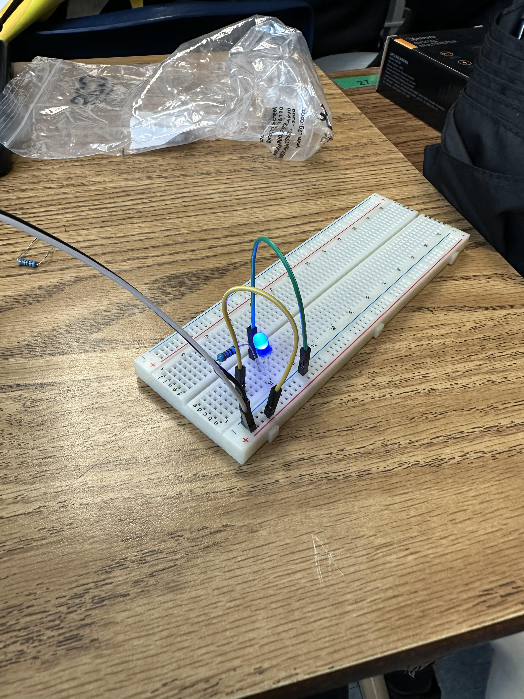
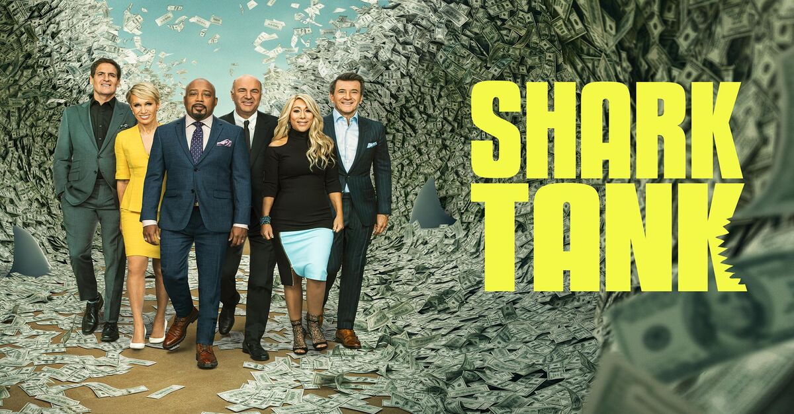
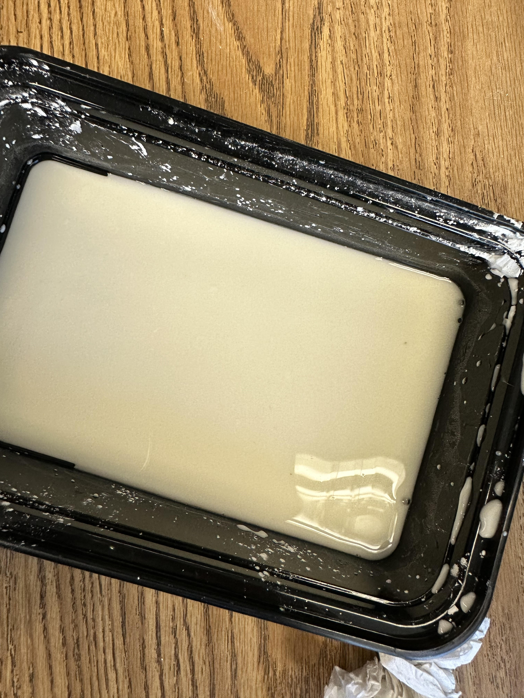

9/2/22
9/9/22
9/16/22
9/23/22
9/30/22
10/7/22
10/14/22

10/21/22
10/28/22
11/4/22
11/11/22
11/11/22
1/13/23
1/20/23
1/27/23
2/3/23
| Week 2
9/2/22 |
I'm not really sure what we're supposed to be writing about, but this week was pretty fun. We designed a RudeGoldberg machine. I think that mine is pretty cool but might be a bit much for what we have to wok with. TinkerCad works well enough but I'm having a really hard time with adding the strings to the model so I might just leave them out. I really thought I would win the challenge this week because of all the compliments I was getting while making it. But then out of nowhere they selected a guy a couple seats behind me because of his nintendo switch or whatever. | |
| Week 3
9/9/22 |
This week we finalized our Rude Goldburg machines, adding measurements and such. For the challenge, we had to create a capital "E" with a partner using exact measurments. I found it relatively easy but that I needed to be extra careful making the measurments and that everythings adds up correctly. I also learned that Tristan, my friend, doesn't know centimeters from inches. | |
| Week 4
9/16/22 |
On monday we got into groups and began making measurements for our RG machine. On tuesday we finalized the measurments and began cutting them out. We noticed almost immediately that our group's machine was going to be much bigger than most everyone else's. We ran into some issues while making supports. We had an idea to cut down on time which was to intersect two strip of cardboard which slits cut into them but they ended up extremely unbalanced and we decided to redo it entirely. This time, we made supports with 3 solid walls which is working much better, although we had wasted quite a bit of time. This taught us to run ideas by the whole group before exectuting them. On friday we tried to make paper boats float on water with weights on them. I got lucky and was put into a group with someone with an excellent boat design. The idea was a boat with greater surface area on the bottom would float the best, and as it turns out, he was right and we came in first place with 110g. | |
| Week 5
9/23/22 |
On Monday and Wednesday we spent class finishing our projects. We ran into couple of issues such as our toy car that we were going to use split in two (we ended up using someone els's car). We needed a more secure way to hold back the car before it was released so we attached a ruler to the pulley to act as a wall. It was held in plae by a couple of vertical rods taped to the side of the ramp. Lastly we needed a way to hold the baseball up while the machine was in rest. We flattened a toilet paper roll and threaded two strings through it. The strings were attached to the supports in a way so that the roll could lay flat while suspened and holding the ball. The machine was ready and we put it to the test. We unwrapped a side of one string holding up the roll, dropping the ball, turning the pulley, raising the ruler, releasing the car, speeding down the ramp, connecting with and popping the ballon at the bottom. It worked first try which was a bit of a surprise. This project was fun and it taught me a lot about the importance of improvising. | |
| Week 6
9/30/22 |
This week we began learning about computer engineering. We watched a slideshow detailing all of the different disciplines that go into making a computer. On the next day we began dissecting or taking apart an old school laptop. We followed some specific steps, taking out components one by one. We also had a worksheet where we would color and keep track of each of the components we found. By the time we had taken everything out, the laptop was just a shell. The next class we put it back together. Unfortunately for us, we didn't keep track of where each of the screws go. We endd up misreplacing them in the computer so by the end, the outside had a couple of divot caused by screws being too long for where we put them. Our group called these 'computer pimples'. | |
| Week 7
10/7/22 |
On Monday we watched a slideshow detailing bioengineering. Nothing too special there. On Wednesday we spent the class period researching and designing prosthesis for animals. I had to take into account what purposes it needed to serve and the challenges that would pose. I chose to design hind leg replacements for a rat. I looked at a lot of accounts such as its skeletal structure and human leg prostheis. I finished my design by the end of class and I think it turned out well. |  |
| Week 8
10/14/22 |
This week we moved into the aerospace engineering section of engineering. Pretty much working with planes and space craft. It's not just the rockets either. Apparently there are entire companies dedicated to each of the appliances which are put onto spaceships and stations. We used tinkercad to design a bottle rocket with the goal of making one that travels the farthest. Mine was pretty simple, just an aerodynamic bottle, a cone, and wings shaped like an airplane's for greater lift. Our group ended picking Tristan's because it was unique (and I left my chromebook on the day we chose). It has FANS AS PROPELLERS ON THE WINGS. We also made paper airplanes. I made mine from memory and it goes far but it wasn't very accurate. |
|
| Week 9
10/21/22 |
We spent this entire week building our bottle rockets based on the tinkercas design. Using Tristan's design from last week, we set out to design a the coolest looking bottle rocket (plane) ever seen. We started out by measuring and cutting the wings out of cardboard. They were in the shape of right triangles and were also segmented down the middle. This was because we would stick smaller bottles in the space between the wing parts for extra support. The next day we hotglued the wings onto the bottle, made a cone, and began testing. It was difficult gluing them on with how large there were. We learned that we need to have patience in order stick them on right, and let them set properly so they dont shift. Tests went relatively well, as it could glide a few feet before being caught by someone else. Though, there were a few times when it nosedived and bent up the cone. This gave us the impression that the ideal launch angle would be a low one, like 15 degrees above the horizontal. We also put some erasers in the cone to add some frontal weight, which is soething it desperately needed. Launch day came and Mr. Kim dropped it during the launch so it went no where. WHile we were waiting to try a second launch, one of our group members threw it off the second floor blacony, it nose dived and lost a wing. We stil gave it a second launch despite only having one wing. This time it went a bit farther, but only by a few feet and it also did exactly 7 backflips. |
|
| Week 10
10/28/22 |
Environmental engineering was a topic I learnt about. Engineering is used to address the issues with engineering, which are responsible for the waste and pollution that are produced in the environment. Additionally, water filters found in everyone's toilets can be utilized with it. Using large rocks, tiny pebbles, sand, and tissue, we had to construct a water filter for a related project. The water would flow through cleanly if it were done in that sequence, from top to bottom. Sand and tissue removed the tainted portions of the water, while rocks filtered out the foreign particles. The water appeared to be drinkable after passing through this filter two times. |  |
| Week 11
11/4/22 |
I studied and learnt about electrical engineering. Three components make up electricity at its most fundamental level. Current, resistance, and voltage. Resistance is self-explanatory, current is the rate of the electricity, and voltage is the amount of power used to power the project (measured in ohms). Batteries provide the majority of the voltage, and the number of ohms in each resistor varies based on the color bands it has. A multimeter is capable of measuring each of these parameters. I also learnt the equation V=IR, or Ohm's law. Each quantity may be calculated separately using this equation, and this law can be extended to additional equations.Resistance, for instance, would equal R1 + R2 + R3 and so on in a series circuit. Parallel circuits can be divided to enable the current to travel through two or more separate components at the same time, as opposed to series circuits, in which the current passes through each component one at a time. Series circuits are more effective but less long-lasting since the components become worn out. When something breaks, everything breaks. Parallel circuits evenly distribute everything, which makes room for more durable components. There is a greater likelihood that everything will still function even if one component breaks. |  |
| Week 12
11/11/22 |
We continued our study of electrical engineering. This week in class we got a breadboard and some simple electrical components to make a cicuit out of. We had a battery in the form of an arduino, some wires, 3 resitors, a multimeter, and several led lights. Making the circuit itself was no big deal, but we ran into some issues around exact voltage and resistance. Altough we supposedly had the right kind of resitors, when we ran the battery through it, the outputted voltage was higher than it should be according to the lab. We spent a long time trying to fix this issue but we ended up figuring out that there was noting which could be done about it. |   |
| Week 13
11/11/22 |
I created a bespoke lit-up breadboard with my partner using an Arduino. Just for fun, I programmed it using an awesome pattern in Arduino. A contentious debate concerning doors and wheels took place in my class. My pals and I went through the school counting every single door, window, and locker in about three different buildings. We recorded 1511 doors altogether. My side argued in favor of doors as the class was divided in half. We successfully countered by saying that books were doorways. We won the argument. | |
| Week 1
1/13/23 |
I gained knowledge about business engineering's inner workings. The consumer should be the primary focus of all designs and concepts, and this was one of the main lessons learned. Business engineers deal with both the user interface and the user experience, whether it's color grading or user data. A shark tank proposal was done by my group. Our plan was to create a universal cap with a drink-cooling sleeve. The price of our goods was one issue we had. We overlooked the reality that many individuals were unhappy because it was too high for them. Overall, it wasn't too horrible compared to our competition, and we were able to garner some support. |  |
| Week 2
1/20/23 |
I discovered that chemical engineering can be used for almost anything, whether it be oil or perfume. Chemical engineering is used in the majority of items, if not all of them, which makes it a good field to work in. Oil refinery and nanotechnology, where you work with atoms at a nanoscale where they are stronger and faster, are two examples of interesting niches. After that, we completed a challenge to remove bromate from a lake, which is made of water, chlorine, and sunlight. The answer we came up with was to employ shadow balls. Most of the sunlight is blocked from reaching the lake by shade balls, which prevents bromate from forming. My friend and I tried to make oobleck. Despite our abject failure, we gave it our best shot. |  |
| Week 3
1/27/23 |
||
| Week 4
2/3/23 |